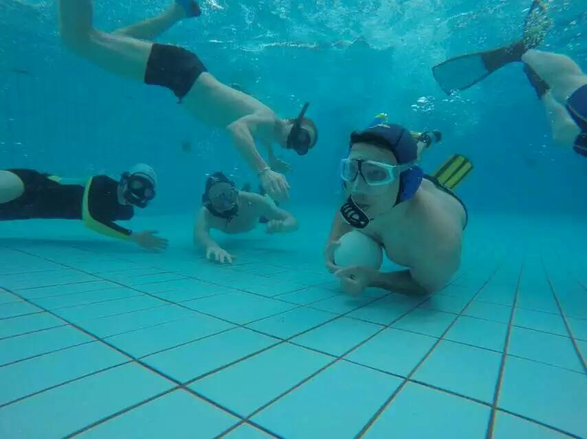

Découvrez Nos Disciplines
 Hockey Subaquatique
Hockey Subaquatique

Le hockey subaquatique est un sport d'équipe non-contact pratiqué au fond d'une piscine. Deux équipes de six joueurs s'affrontent pour pousser un palet lourd à l'aide d'une crosse dans le but adverse. C'est un sport intense qui demande apnée, endurance et stratégie.
Ce sport développe l'apnée, la force physique, l'agilité sous l'eau et la coordination d'équipe. Il est parfait pour ceux qui aiment les défis aquatiques et la collaboration.
Des clubs existent à travers le Canada.
 Rugby Subaquatique
Rugby Subaquatique

Le rugby subaquatique est un sport d'équipe en trois dimensions joué au fond d'une piscine profonde. Deux équipes tentent de placer un ballon rempli d'eau salée (qui coule) dans le panier adverse. Les contacts sont autorisés pour prendre le ballon au porteur.
Ce sport développe l'apnée, la puissance, la tactique spatiale et la capacité à travailler en équipe dans un environnement unique. Il est idéal pour les athlètes cherchant un sport aquatique intense et stratégique.
Des clubs existent à travers le Canada.
 Football Subaquatique
Football Subaquatique
Le football subaquatique est un sport subaquatique pratiqué par deux équipes de 5 joueurs. Le football subaquatique partage des règles et des éléments de jeu communs avec le hockey subaquatique et le rugby subaquatique. Comme pour ces jeux, il se pratique dans la partie profonde d’une piscine avec un équipement de snorkeling (masque, tuba et palmes).
Le but du jeu est de marquer un point en plaçant le ballon du côté adverse d’une piscine. Le ballon ne peut être possédé que par des joueurs complètement immergés sous l’eau en apnée. Le ballon doit être passé ou lâché en remontant à la surface pour respirer.
Pour en savoir plus :
Visitez uwfootball.caDiscover Our Disciplines
Underwater Hockey
Underwater hockey is a non-contact team sport played on the bottom of a swimming pool. Two teams of six players compete to push a heavy puck using a stick into the opponent's goal. It's an intense sport that requires breath-holding, endurance, and strategy.
This sport develops breath-holding, physical strength, underwater agility, and team coordination. It's perfect for those who enjoy aquatic challenges and collaboration.
Clubs exist across Canada.
Underwater Rugby
Underwater rugby is a three-dimensional team sport played at the bottom of a deep pool. Two teams try to place a saltwater-filled ball (which sinks) into the opponent's basket. Contact is allowed to take the ball from the ball carrier.
This sport develops breath-holding, power, spatial tactics, and the ability to work as a team in a unique environment. It's ideal for athletes seeking an intense and strategic aquatic sport.
Clubs exist across Canada.
 Underwater Football
Underwater Football
Underwater football is an underwater sport played with two 5 player teams. Underwater Football shares some common rules and play elements with Underwater Hockey and Underwater rugby. As with those games, it is played in the deep end of a swimming pool with snorkeling equipment (mask, snorkel, and fins).
The goal of the game is to score a point by placing a the ball on the opponents side of a pool. The ball can only be possessed by players who are completely submerged underwater holding their breath. The ball must be passed or dropped when going to the surface for air.
To learn more:
Visit uwfootball.ca